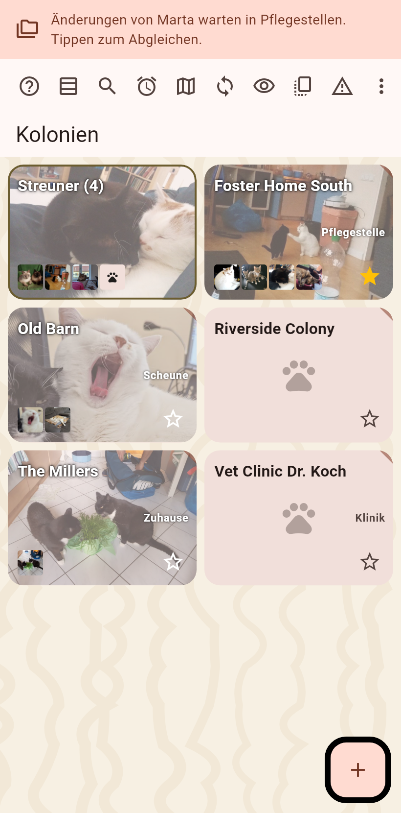

Alles, was die App zu sagen hat, kommt oben auf den Bildschirm, unter die Statusleiste: eine Notiz nach der anderen, die Seite rutscht darunter nach unten, nichts unten, wo die Gesten und die Tastatur sind.

Eine Notiz sagt nur, dass ein Vorgang fertig ist, dass er fehlschlug, oder dass Änderungen warten. Tippe einen fertigen Abgleich an für das, was ankam, einen Fehler für die Ursache, den vollen Text und einen Melden-Knopf. Nach links wischen zeigt die nächste Notiz, nach rechts räumt die Neuigkeiten weg. Ein Fehler bleibt, bis er nach links gewischt oder angetippt wird; ein fertiger Vorgang geht nach drei Sekunden.
Eine dünne Linie pulsiert mit einem Symbol pro laufendem Vorgang, solange ein Ordner-Abgleich, ein persönlicher Abgleich, eine Sicherung oder ein Archivieren läuft.
Kopiert, eingetragen und geleert melden sich nicht: eine grüne Pfote am angetippten Knopf sagt, dass es geklappt hat.